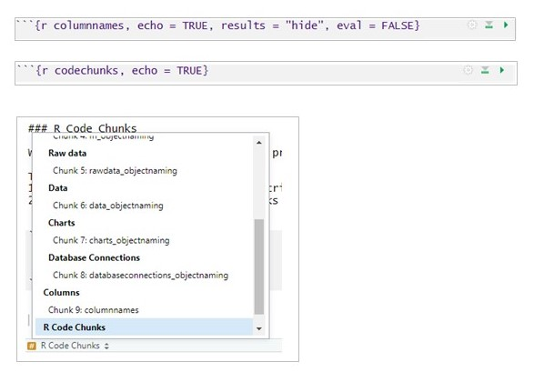
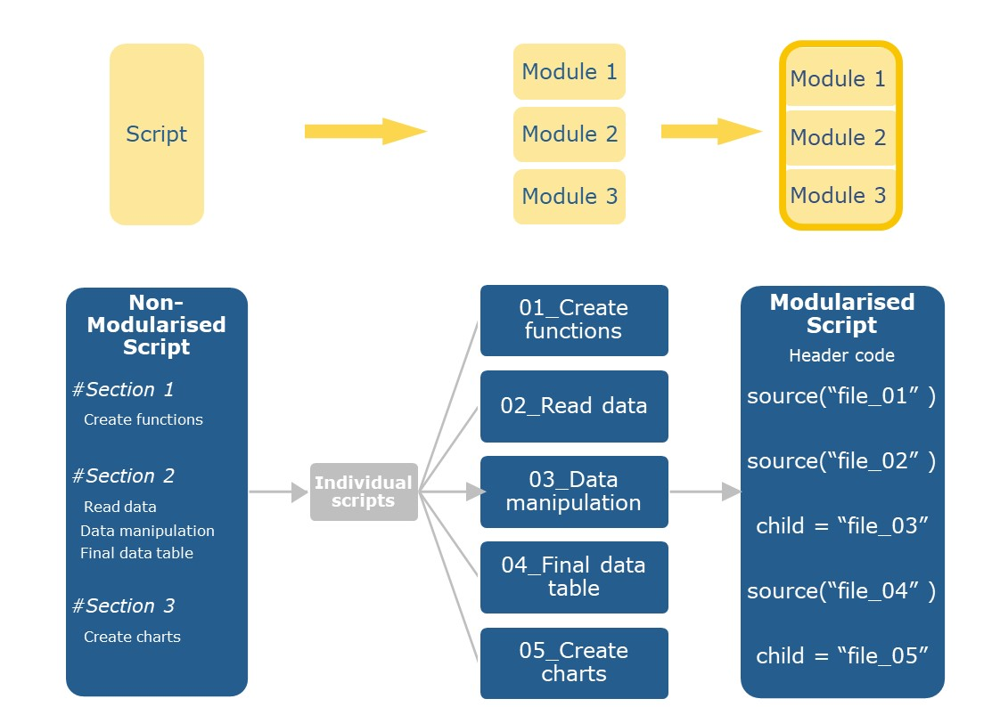
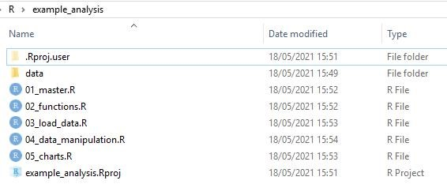
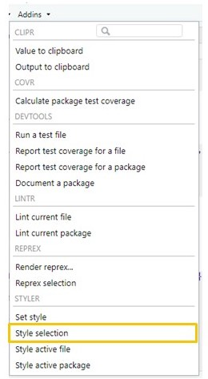
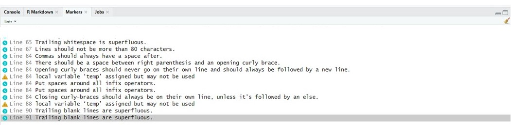

OCAT Style Guide for R Code
1 Introduction
Welcome to the OCAT style guide!
We’ve created this guide with the aim of improving readability and providing some consistency across R scripts and projects in the team.
In the words of the great Hadley Wickham, “good styling is like correct punctuation: you can manage without it, butitsuremakesthingseasiertoread”.
Just like any other language, there are often many ways of saying the same thing or getting to the same point in R. Whilst diversity is great, this guide sets out some key principles to provide some standardised format across the team.
We still want the “ay up” in the North and “hello” in the South, just with a similar format applied!
This guide covers:
This guide takes inspiration from the tidyverse style guide.

Figure 1.1: Code Quality Measurement, adapted from the book ‘Clean Code’ by Robert Martin
1.1 Quick Reference Guide
The below is a quick reference guide with key points. Please refer to specific sections within this guide for more detail.

2 Names
Meaningful and consistent names for files, objects, columns and chunks of code make it easier for the user to understand and navigate around the script. This section includes guidance and examples on naming.
2.1 File names
Key points:
Do
- Meaningful file names
- Use letters, numbers, - and _
- Lowercase (easier to remember)
- Files which include a single function should be called the same as the function
- If a file contains multiple functions, try to give it a concise but meaningful name
- If files should be run in a particular order then number them BUT be sure to keep this numbering up to date.
Avoid
- Avoid using special characters
- Spaces between words
2.2 Object names
Similar to files names, object names should ideally only use:
-
lowercase
-
numbers
- underscores (_) to separate words
# Object names: Good
chart_highest_three
chart_highest_3
# Object names: Avoid (mix of upper and lowercase, lack of underscore to separate words)
highestThree
charthighestthreeTry to make the object names meaningful (i.e. relating to what they include) and following a similar structure, for example:
- functions: fn_name
- raw data: data_raw_name
- data: data_name
- charts: chart_name
- database connections: db_name
Functions
Raw data
Data
Charts
Database Connections
2.3 Columns
- Use _ to separate word (avoid spaces)
- Meaningful - clear what data it includes.
- Avoid columns which are a duplication of others (e.g. total2, dateauthorised2)
2.4 R Code Chunks
When creating rmd scripts, it can be useful to label your chunks of code.
This has two main benefits:
1. Helps you to navigate around your R script (acts like a contents)
2. Easily identify specific code chunks which might have caused the script to fall over.
Example code chunk names and use of scroll

See also Internal Structure section in this guide for alternative ways to denote sections.
3 Organisation
It really pays off to create an organised file structure from the start; it is much harder to re-organise files when you are further along in developing the project.
This section provides guidance on how to structure a project and single script.
3.1 Project
Working in an R Project has various benefits:
- The project folder becomes the working directory, so all file paths are relative to that folder. For example, to import a csv file, just the file name needs to be added to the read command.
my_raw_data <- read.csv(“my_data_file.csv”, stringsAsFactors = FALSE)- Sharing the project files with another user then means that R will find files when run on their system.
- Project files and sub-folders need to be contained within one main directory for publishing to shiny apps.
- The project files can be navigated to easily in the ‘Files’ tab of the RStudio window.
Create a Project
To create a New Project in RStudio, select File | New Project… and you can either start from scratch in a new directory, or select an existing directory where you’ve already started to store your project files.
Project Sub-Folders
It’s good practice to keep data files in a separate sub-folder, so the relative file path to a sub-folder will be “./data/my_data_file.csv”
my_raw_data <- read.csv(“./data/my_data_file.csv”, stringsAsFactors = FALSE)
3.2 Scripts
Whilst scripts are created for many different purposes, they often follow a similar structure:
- Load packages
- Set up any connections (e.g. SQL)
- Read in functions
- Set parameters
- Read in data
- Data manipulation
- Analysis/outputs (charts, tables etc. for end use)
Example script structure:
1. Load packages
All packages required for the script should be loaded at the start. This enables the user to immediately identify which packages might need to be installed, avoids any hidden dependencies and keeps a good structure to the script.
We would recommend keeping all required packages in a seprate file which can be read into the script at the start.
source(“packages.R”)
However if you would rather have your packages in your script, keep them in a single chunk (see example below).
2. Set up connections
If connections to databases are required, set these up toward the start of the script. This allows the users to immediately identify any connections required.
Please refer to the OCAT teams ‘Knowledge base’ for guidance on how to set up an ODBC connection.
3. Read in functions
It is useful to keep functions in one place, whether this is in a single file or in multiple files. Ensure your functions files are clearly labelled.
You can use the source() command to read in separate functions files.
Alternatively if you have a number of functions to import, you might want to use the list and lapply commands.
# Example: import separate files
source("fn_cruderate")
source("fn_easr")
source("fn_charts")
# Example: import as part of a list
my_list <- c("fn_cruderate", "fn_easr", "fn_charts")
lapply(my_list, source)4. Set parameters
Sometimes scripts require manual changes to update the week numbers, dates, specific filters etc. used within the code.
It is good practice to place these in objects and in one place toward the start of the script, so that it is clear that the user needs to change these.
# Example set parameters for week numbers
min_weekno <- 3
min_weekno <- 18
# Example set parameters for date
max_date <- "2021-06-02"5. Read in data
Import all data required for the analysis in one chunk.
-
This allows the user to:
- quickly understand which data are being used
- flag any data import issues in one place
When importing raw data, you might want to signify this in the object name.
Try to keep an ‘untouched’ version of the raw data in its own dataframe; any changes made to the raw data should be placed in a new dataframe. Keeping a raw version of the data provides the option for the user to return to the original data if required. This might be useful for data checks and particularly beneficial when working with very large datasets which take a long time to import!
6. Data Manipulation
This is usually the largest section within a script and often include commands from base R and the tidyverse packages such as: filter(), select(), mutate() subset() as.character(), as.numeric() etc.
Try to find a balance between commenting this section so clear on the process whilst not being too descriptive.
# Filter data for LA and add column for HB
data_MYE <- data_raw_MYE %>%
filter(local_authority == "Cardiff")7. Analysis outputs
Often the final section of the script which will include outputting data in a format to be used elsewhere (e.g. datatable, chart etc.).
Avoid writing to a specific file path - if you have set up a project, outputs are usually written to project folder.
3.3 Modularisation
Modularising is simply splitting your script into chunks (modules), with each carrying out a separate command. In bringing each of these modules (scripts) together, you produce an output.
Often the easiest way to approach modularisation is to start with an existing script and move chunks of code to separate scripts.
Individual scripts are then read in to the ‘main’ script using the source(“script_name.R”) or child = “script_name.Rmd” commands.

Modularising a script is a good way of:
The figure below illustrates modularisation of scripts. Note how each file is named based on the order it is imported into the main script, refer to the File Names section of this guide for more detail.

3.4 Version Control
This section will be completed at a later stage
4 Styling
The aim is to find the balance between:
However, this is often easier said than done! This section provides a few pointers to help achieve this balance.
Key points:
%>% or + should be followed by a new line of code.
() even when no arguments are passed through the command
This section looks at ways to help readability of the script through:
4.1 Commenting
4.1.1 Commenting
Comments are a great way of helping the user read through your script, follow your rationale and understand what the code is supposed to be doing. It is really important to comment your code (especially whilst the script is in development stage), as it will not only help others but also yourself when returning to the script after a weekend - I’m sure we’ve all had that moment on a Monday morning trying to work out what on earth we were trying to do with our code the previous Friday!
During the development stages of your code, it’s often useful to include comments on what you’ve tried, why you’re using a certain approach and hyperlinks to any websites you might have used. It might also be useful to keep a ‘status of code’ summary at the start of the development code to log what’s been done (i.e. progress, what you’ve got working) and what is yet to be completed.
Whilst commenting is good, it can be really easy to get carried away and turn our scripts into short stories with more comments than code! For more ‘final’ versions of code or code to share for QC, we should try to find that sweet spot between informative comments and not comment overload.
Here are some tips:
Below is an example of ‘final’ vs development comments in script.
Example: Commenting Final Script
# Filter data for LA in Wales only as all others fall outside study area
data_wales <- data_example %>%
filter(str_detect(Code, "^W")) %>%
rename("total_pop" = "All ages")
# Join HB - these are required later in the analysis
data_wales <- data_wales %>%
left_join(hb_lkup,
by = c("Code" = "lacode"))
# Plot total population
chart_popwales <- ggplot(
data_wales,
aes(x = Name, y = total_pop)) +
geom_col() +
scale_y_continuous(
name = "",
expand = c(0, 0),
limits = c(0, max(data_wales$total_pop) + 100)
) +
theme(
text = element_text(face = "plain", colour = "black"),
panel.background = element_blank(),
axis.line.y = element_line(color = "#7F7F7F"),
axis.ticks.y = element_blank(),
axis.line.x = element_line(color = "#7F7F7F"),
axis.ticks.x = element_blank(),
axis.text.y = element_text(size = 10),
axis.text.x = element_text(
size = 10,
angle = 90, vjust = 1, hjust = 1
)
)
# Print population chart
chart_popwales Example: Commenting Development Script
# filter data for Wales LA only - this doesn't work
# data_wales <- data_example %>%
# filter(startsWith(Code, "^W"))
# The above doesn't work, try alternative method using str_detect.
# Useful website for reference: https://blog.exploratory.io/filter-with-text-data-952df792c2ba
data_wales <- data_example %>%
filter(str_detect(Code, "^W")) %>% ## filter Code column for all LA starting with (^) the letter W
rename("total_pop" = "All ages") #%>%
# mutate(percentage_pop = total_pop/wales_total_pop*100)
# Added health board - do we think this is needed?
data_wales <- data_wales %>%
left_join(hb_lkup, ## join to lookup table
by = c("Code" = "lacode")) ## join on LA columns in the two datasets.
# Attempt to plot as bar chart
chart_popwales <- ggplot(
data_wales,
# aes(x = Name, y = percentage_pop),
aes(x = Name, y = total_pop)) + ## col name changed - plot total pop
geom_col() +
# geom_line(size = 0.5) +
# Add scale and set max to total pop + 100 buffer
scale_y_continuous(
name = "", # Removes y axis title
expand = c(0, 0), # Removes gap before 0 at bottom of chart
limits = c(0, max(data_wales$total_pop) + 100) # Sets start and end of y axis based on max value of total population
# labels = comma ##adds comma to values
) +
## Add theme - updated May 2021
theme(
text = element_text(face = "plain", colour = "black"), # Use the theme function, change title style
panel.background = element_blank(), # Remove background
axis.line.y = element_line(color = "#7F7F7F"), # Change y axis line to grey
axis.ticks.y = element_blank(), # Remove y axis tick marks
axis.line.x = element_line(color = "#7F7F7F"), # Change x axis line to grey
axis.ticks.x = element_blank(), # Remove x axis tick marks
# axis.text.y = element_text(size=9), #set axis text size
axis.text.y = element_text(size = 10),
axis.text.x = element_text(
size = 10,
angle = 90, vjust = 1, hjust = 1 # set axis text size and position from x axis. changed from 45
)
)
# Print population chart
chart_popwales 4.2 Internal Structure
Any easy way of improving readability is to include lines of #—- , #>>>> , #### and #==== to break up chunks of code. These might be used as inline or as as chunk (see examples below).
Note that lines ending in 4+ hashes ( #### ), dashes ( #—- ) or equals ( #==== ) denotes a section which can be used for navigating through longer scripts. In the figure below, examples 1-6 would denotes a section. See also Naming R Code Chunks section in this guide.
#===== Example 1 ======
#----- Example 2 ------
#### Example 3 #######
# Example 4 ---------------------------------
# Example 5 =================================
# Example 6 ###############################
#===============
# Example 7
#===============
#---------------
# Example 8
#---------------
#>>>>>>>>>>>>>>
# Example 9
#>>>>>>>>>>>>>>4.3 Assignment
When assigning to an object, always use <- rather than = .
Often the object is on the left, with assigned variable/code on the right (see example below).
## Assignment: Good
# Example 1
x <- 10
# Example 2
example <- data %>%
filter(x == 2) %>%
group_by(local_authority)
# Example 3
example <-
data %>%
filter(x == 2) %>%
group_by(local_authority)
## Assignment: Avoid (used of =, long lines of code, assignment on right)
# Example 1
x = 10
# Example 2
example <- data %>% filter(x == 2) %>% group_by(local_authority)
# Example 3
data %>%
filter(x == 2) %>%
group_by(local_authority) -> example4.4 Whitespace
Similar to punctuation, adding spaces to code isn’t essential but it will make it easier to understand.
Using spacing before and/or after the following helps improve the readability of code:4.4.0.1 Commas
4.4.1 Operators
4.5 Avoid Long lines
When using packages such as ggplot or dplyr, the pipe function ( %>% ) and + should have a space before it, with any subsequent commands on a new a new line and a two space indentation.
Tip: It’s sometimes useful to add space between lines of code to break it up
4.5.1 Pipe
# Whitespace: Good
example <- data_ONS_MYE %>%
mutate(Year = "2019") %>%
select(
"local_authority",
"health_board",
"total_population"
)
# Whitespace: Avoid
example <- data_ONS_MYE %>% mutate(Year = "2019") %>% select("local_authority", "health_board", "total_population")Whilst most code using pipe ( %>% ) will be on a new indented line, one-step pipes are often on a single line.
However, if you start expanding the code then this should be changed to multiple lines.
Top tip: it is suggested that 80 characters is the maximum for a line of code.
You can add a vertical ruler to your code to help you keep within these guidelines by:
Tools -> Global options -> Code -> Display -> check Show margins -> Ok
4.5.2 Charts
# Whitespace Chart: Good
chart_example <- data_ONS_MYE %>%
filter(local_authority == "Cardiff") %>%
ggplot(aes(x = year, y = total_population)) +
geom_line(linetype = "dashed") +
theme(
panel.background = element_blank(),
legend.position = "top",
legend.title = element_blank()
)
# Whitespace Chart: Avoid
chart_example <- data_ONS_MYE %>%
filter(local_authority == "Cardiff") %>%
ggplot(aes(x = year, y = total_population)) + geom_line(linetype = "dashed") +
theme( panel.background = element_blank(),legend.position = "top",legend.title = element_blank())4.6 Arguments
There are some commands which can be executed without an argument.
In these instances you should still include () , rather than omitting it completely (see example below).
5 Packages
There are two key packages which can help style your code (both of which are in line with tidyverse style guide):
5.1 Getting started
First you will need to ensure you have the styler and lintr packages installed. This can be done in the following way:
5.2 Load packages
Load the packages required for the analysis. In this example, we are also using tidyverse for data manipulation.
5.3 Import data
Read in any data required for your analysis. This example uses data built into R.
5.4 Style selection examples
Example 1
This example highlights the code and applies ‘Addins’ -> ‘Style selection’ .

Note that when using **styler* for the first time, you might be required to agree a suggested location for cache. This will appear in your console and will require you to confirm before it can run the code. You should only need to do this once.
example_1 <- data_trees %>% count(Height) %>% mutate(Variable = "Trees")
#--------------------------------------------------------------
## Highlight code and select 'Addins' -> 'Style selection'.
## This reformats the code to the following format, in line with tidyverse guidelines
#--------------------------------------------------------------
example_1 <- data_trees %>%
count(Height) %>%
mutate(Variable = "Trees")Example 2
## Example unformatted code
example_2 <- function(a,b){temp<-a+b}
#--------------------------------------------------------------
## Highlight code and select 'Addins' -> 'Style selection'.
## This reformats the code to the following format, in line with tidyverse guidelines
#--------------------------------------------------------------
## Apply styler
example_2 <- function(a, b) {
temp <- a + b
}5.5 Lintr Example
If you select ‘Addins’ -> ‘LINTR’ you will have the option to use it on either the entire file or just a package.
Selecting the entire file provide guidance in your console below on how to format code.

Note that when you run lintr for the first time, you may be required to update your miniUI package. If this is the case, a message will appear in the console.